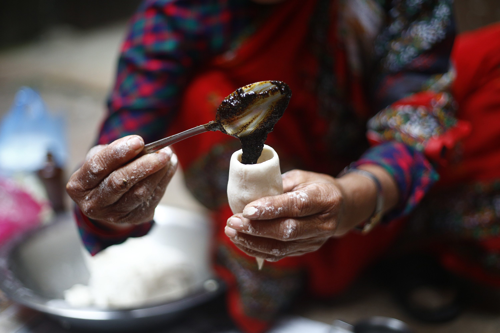
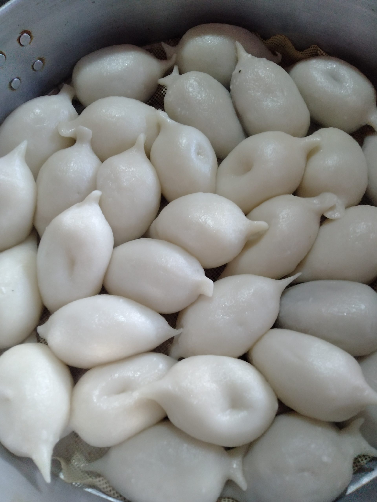
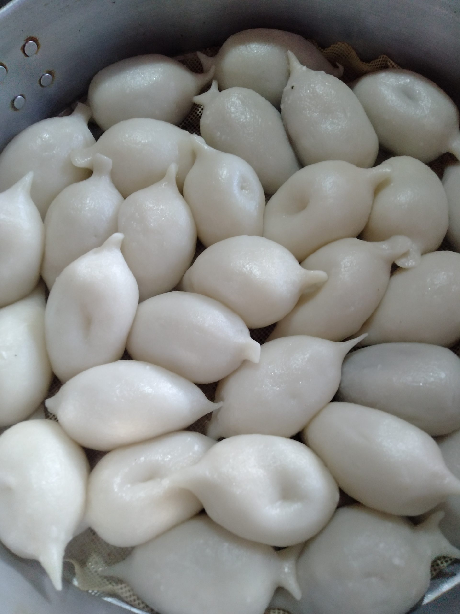
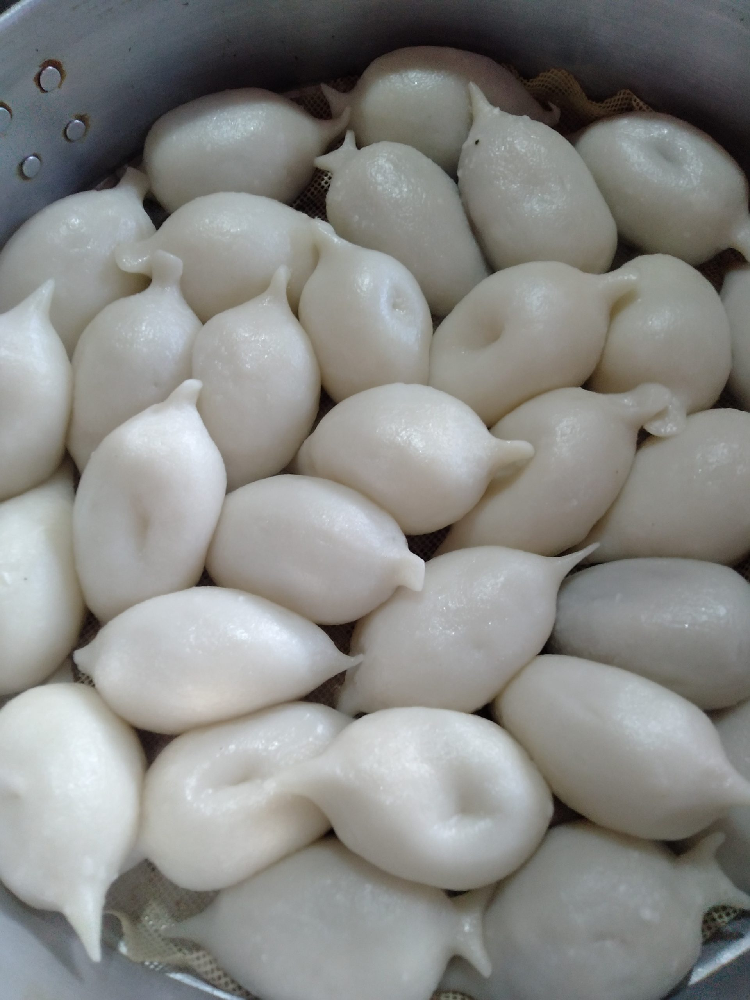
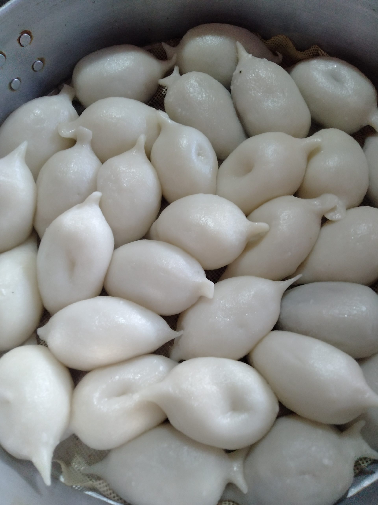

Gallery

 



A sweet and sacred delicacy from the Newar community, Yomari symbolizes prosperity and is enjoyed during the festival of Yomari Punhi.
Yomari originates from the Newar community of the Kathmandu Valley and is deeply rooted in their culture. The name ‘Yomari’ comes from the Newari words *“yo”* (to like) and *“mari”* (bread), meaning “the bread people like.”
Outer Shell: Made from freshly ground rice flour, shaped into a fish-like or cone shape.
Filling: Typically filled with a sweet mixture of molasses (*chaku*) and sesame seeds.
It is traditionally prepared and eaten during *Yomari Punhi*, a festival that marks the end of the rice harvest. People offer Yomari to gods and distribute them among family and friends.
The unique shape of Yomari is said to represent fertility and abundance. Many Newar households believe making Yomari brings good fortune for the year ahead.
